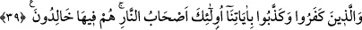

Çünkü günahlar nimetleri azaltır.
Nitekim âyette de şöyle buyrulmuştur: “Şüphesiz bir kavim kendini değiştirmedikçe
Allah onları değiştirmez.” (er-Ra’d, 13/11) Âyette geçen “Şâyed benden size hidâyet
gelirse” cümlesinde “fa” tertip ifâde eder. Yâni hidâyet gelirse, dünyâya inildikten
sonra gelecektir. “__WORD__ ise Allah’ın gönderdiği peygamberler ve kitaplar ile gösterdiği
doğru yoldur. ( __WORD__ ) (size) zamîrinden Âdem ve onun nesli anlaşılır. Şeytan ve nesline
“hidâyetçi” gönderilmeyecektir. Çünkü onlar Hakk’a tâbi olmazlar. Âyetin geri kalan
kısmı şart mânâsı ifâde eden baş tarafına cevap makamındadır. Her kim ona uyarsa
onlara (iki dünyâda da) korku yoktur. Onlar (taleb ettikleri şeyleri kaybetmeye de)
üzülmeyeceklerdir.
Âyette “ __WORD__ ” kelimesi ikinci kez tekrar edilmiş, onun yerine zamîr kullanılmamıştır.
Çünkü ikinci “ __WORD__ ” önce geçenden daha genel olup, peygamberlerin getirdiği amelî ve
i’tikâdî konuları, aklın gereği olan hususları içine alır. Kısaca âyet; şerîât olarak
kendisine gönderilen hükümlere uyan, aklın gösterdiği âfâkî (objektif) ve enfüsî
(sübjektif) delillere riâyet eden kimselere müjde vermektedir.
Korku, ilerde olabilecek şeylerde; hüzün ise, hâl-i hazırda olan işlerde olur. Âyette
zikredilen kimselerin korkmamaları Allah’dan korkmamaları anlamına gelmez. Bilakis
Allah’ın seçkin kulları, amellerini az görerek, Allah’ın celâl sıfatına saygı duyarak
O’ndan korkarlar. Burada kasdedilen mânâ, onların Allah’dan korkmayı gerektirecek iş
yapmadıklarıdır.
39. İnkâr edip âyetlerimizi yalanlayanlara gelince, onlar cehennemliktir, onlar
orada ebedî kalırlar.
“İnkâr edenler” hidâyete tâbi olanlara atfedilmiştir. Hidâyete uyanlarla inkâr edenler,
birbirlerinin zıddıdır. Allah Teâlâ, hidâyetime tâbi olanlara böyle mükâfat veririm.
Hidâyetime uymayanlara ise şöyle cezâ veririm, demektedir. ( __WORD__ ) ibâresinde
ism-i mevsûlün çoğul olması kâfirlerin çok olacağına işâret eder. Dilleri ve kalbleri ile
kendilerine indirilen âyetleri yalanlayan kâfirler, cehennemin ayrılmaz müdâvimleridir.
Âyetteki (__WORD__) ism-i işâreti âyetin başında geçen (__WORD__) mevsûlünün sılasındaki
özellikleri taşıyan kimselere işâret eder. Bu vasıflar da âyetleri inkâr etme ve
yalanlamadır.
“Sohbet” kelimesinde vuslat mânâsı vardır. Kâfirler cehennemde toplanacak, orada
bâkî kalacak ve âdetâ cehennem onların mülkü olacaktır. Bu yüzden Allah Teâlâ,
kâfirleri cehennem ashâbı olarak isimlendirmiştir.
“Onlar cehennemde ebedî kalırlar” cümlesi hâl makamında olduğu için mansubdur.